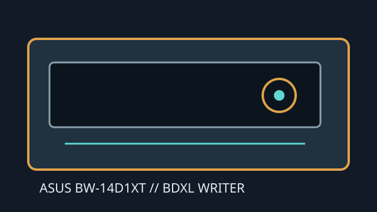

[ INTERNAL BLU-RAY WRITER ]
ASUS BW-14D1XT
Internal 14× Blu-ray writer with BDXL media support. Triple-/quad-layer write capability is distinct from UHD Blu-ray playback; verify the exact supported media and host software.

IDENTIFICATION: ASUS BW-14D1XT. Its BDXL write support is recorded here for this unique internal SKU; no UHD playback claim is made.
Documented specifications
| Media read/write formats | Reads BD-ROM, BD-R/RE, BDXL BD-R triple-/quad-layer and BD-RE triple-layer, DVD-ROM, DVD±R/RW, DVD±R DL, DVD-RAM and CD-ROM/R/RW. Writes BD-R/RE, BDXL BD-R TL/QL and BD-RE TL, DVD±R/RW, DVD±R DL, DVD-RAM and CD-R/RW. |
|---|---|
| Maximum speeds | BD-R single layer up to 14×; BD-R dual layer up to 12×; BDXL BD-R TL/QL up to 6×; BD-RE up to 2×. The manual distinguishes read/write and layer ratings; check its supported-media table for the exact disc. |
| Interface and physical bay | Internal 5.25-inch half-height SATA desktop drive with tray loading. Requires SATA data and power leads and a bay with compatible mounting and front clearance. |
| Host and firmware compatibility | Use a host SATA controller and OS supporting optical ATAPI enumeration. BDXL recording requires matching BDXL media and authoring software; protected UHD playback is not specified for this SKU. Apply only ASUS firmware for the exact drive/revision. |
Manufacturer and manual sources
- ASUS — BW-14D1XT supportManufacturer support listing for the model.
- ASUS BW-14D1XT manualProduct manual and model-specific BD/BDXL formats and speed table.
- ASUS — Download CenterManufacturer instructions for locating product manuals and firmware.
UHD playback and BDXL recording are separate capabilities; this record claims the latter only.